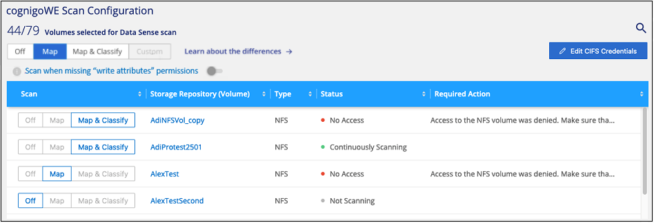
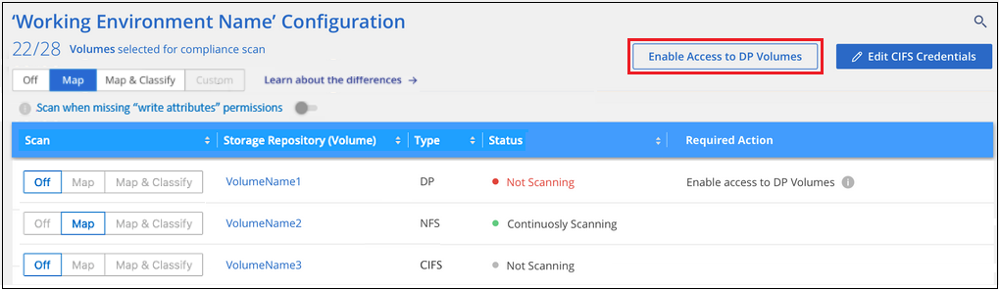

Solicitar cambios en el documento
Solicitar cambios en el documento Editar en GitHub
Editar en GitHub Guía del colaborador
Guía del colaboradorComience a utilizar Cloud Data Sense para Amazon FSX para ONTAP
Colaboradores
Complete unos pasos para comenzar a analizar el volumen de Amazon FSX para ONTAP con Cloud Data Sense.
Antes de empezar
-
Necesita un conector activo en AWS para implementar y gestionar Data Sense.
-
El grupo de seguridad seleccionado al crear el entorno de trabajo debe permitir el tráfico desde la instancia de Cloud Data Sense. Puede buscar el grupo de seguridad asociado mediante ENI conectado al FSX para el sistema de archivos ONTAP y editarlo mediante la consola de gestión de AWS.
Inicio rápido
Comience rápidamente siguiendo estos pasos o desplácese hacia abajo para obtener todos los detalles.
 Descubra el FSX para los sistemas de archivos ONTAP que desea analizar
Descubra el FSX para los sistemas de archivos ONTAP que desea analizarAntes de poder analizar volúmenes FSX para ONTAP, "Debe tener un entorno de trabajo FSX con volúmenes configurados".
 Ponga en marcha la instancia de Cloud Data Sense
Ponga en marcha la instancia de Cloud Data Sense"Ponga en marcha Cloud Data Sense en BlueXP" si aún no hay una instancia implementada.
 Habilite Cloud Data Sense y seleccione los volúmenes que desea analizar
Habilite Cloud Data Sense y seleccione los volúmenes que desea analizarHaga clic en detección de datos, seleccione la ficha Configuración y active las exploraciones de cumplimiento para volúmenes en entornos de trabajo específicos.
 Garantice el acceso a los volúmenes
Garantice el acceso a los volúmenesAhora que Cloud Data Sense está habilitado, asegúrese de que pueda acceder a todos los volúmenes.
-
La instancia de Cloud Data Sense necesita una conexión de red a cada subred FSX para ONTAP.
-
Asegúrese de que los siguientes puertos están abiertos a la instancia de Data Sense:
-
Para NFS, puertos 111 y 2049.
-
Para CIFS, puertos 139 y 445.
-
-
Las políticas de exportación de volúmenes NFS deben permitir el acceso desde la instancia de Data Sense.
-
La detección de datos necesita credenciales de Active Directory para analizar volúmenes CIFS. + haga clic en cumplimiento > Configuración > Editar credenciales CIFS y proporcione las credenciales.
 Gestione los volúmenes que desea analizar
Gestione los volúmenes que desea analizarSeleccione o anule la selección de los volúmenes que desea analizar y Cloud Data Sense iniciará o dejará de analizarlos.
Descubrir el FSX para el sistema de archivos ONTAP que desea analizar
Si el sistema de archivos FSX para ONTAP que desea analizar no está ya en BlueXP como entorno de trabajo, puede agregarlo al lienzo en este momento.
Implementar la instancia de Cloud Data Sense
"Ponga en marcha Cloud Data Sense" si aún no hay una instancia implementada.
Debe implementar el sentido de datos en la misma red de AWS que Connector for AWS y los volúmenes FSX que desea analizar.
Nota: actualmente no se admite la implementación de Cloud Data Sense en una ubicación en las instalaciones al analizar volúmenes FSX.
Las actualizaciones del software Data Sense se automatizan siempre que la instancia tenga conectividad a Internet.
Habilitar el sentido de los datos en el cloud en sus entornos de trabajo
Puede habilitar Cloud Data Sense para FSX para volúmenes de ONTAP.
-
En el menú de navegación izquierdo de BlueXP, haga clic en Gobierno > Clasificación y seleccione la ficha Configuración.

-
Seleccione cómo desea analizar los volúmenes en cada entorno de trabajo. "Obtenga más información sobre las exploraciones de clasificación y mapeo":
-
Para asignar todos los volúmenes, haga clic en asignar todos los volúmenes.
-
Para asignar y clasificar todos los volúmenes, haga clic en asignar y clasificar todos los volúmenes.
-
Para personalizar la exploración de cada volumen, haga clic en o seleccione el tipo de exploración para cada volumen y, a continuación, elija los volúmenes que desea asignar y/o clasificar.
Consulte Habilitar y deshabilitar los análisis de cumplimiento de normativas en los volúmenes para obtener más detalles.
-
-
En el cuadro de diálogo de confirmación, haga clic en aprobar para que Data SENSE empiece a analizar los volúmenes.
Cloud Data Sense comienza a analizar los volúmenes seleccionados en el entorno de trabajo. Los resultados estarán disponibles en la consola de cumplimiento tan pronto como Cloud Data Sense termine los análisis iniciales. El tiempo que se tarda en depende de la cantidad de datos; puede que sea unos minutos u horas.

|
De forma predeterminada, si Data sense no tiene permisos de atributos de escritura en CIFS o permisos de escritura en NFS, el sistema no analizará los archivos de los volúmenes, ya que el detección de datos no puede revertir la "última hora de acceso" a la Marca de hora original. Si no le importa si se restablece la última hora de acceso, haga clic en o seleccione el tipo de exploración para cada volumen. Esa página tiene un valor que se puede habilitar para que Data Sense analice los volúmenes sin tener en cuenta los permisos. |
Comprobar que Cloud Data Sense tiene acceso a volúmenes
Asegúrese de que Cloud Data Sense pueda acceder a los volúmenes mediante la comprobación de las redes, los grupos de seguridad y las políticas de exportación.
Deberá proporcionar la detección de datos con credenciales CIFS para poder acceder a volúmenes CIFS.
-
En la página Configuration, haga clic en View Details para revisar el estado y corregir los errores.
Por ejemplo, la siguiente imagen muestra que un volumen Cloud Data Sense no puede analizar debido a problemas de conectividad de red entre la instancia de detección de datos y el volumen.
-
Asegúrese de que hay una conexión de red entre la instancia de Cloud Data Sense y cada red que incluya volúmenes para FSX para ONTAP.
Para FSX para ONTAP, Cloud Data Sense puede analizar volúmenes sólo en la misma región que BlueXP. -
Asegúrese de que los siguientes puertos están abiertos a la instancia de detección de datos.
-
Para NFS, puertos 111 y 2049.
-
Para CIFS, puertos 139 y 445.
-
-
Compruebe que las políticas de exportación de volúmenes NFS incluyan la dirección IP de la instancia de Data Sense para poder acceder a los datos de cada volumen.
-
Si utiliza CIFS, proporcione detección de datos con credenciales de Active Directory para poder analizar volúmenes CIFS.
-
En el menú de navegación izquierdo de BlueXP, haga clic en Gobierno > Clasificación y seleccione la ficha Configuración.
-
Para cada entorno de trabajo, haga clic en Editar credenciales CIFS e introduzca el nombre de usuario y la contraseña que necesita Data Sense para acceder a los volúmenes CIFS en el sistema.
Las credenciales pueden ser de sólo lectura, pero si se proporcionan credenciales de administrador, se garantiza que Data Sense pueda leer cualquier dato que requiera permisos elevados. Las credenciales se almacenan en la instancia de Cloud Data Sense.
Si desea asegurarse de que los análisis de clasificación de detección de datos no modifican sus archivos “horas a las que se accedió por última vez”, recomendamos que el usuario tenga permisos de atributos de escritura en CIFS o permisos de escritura en NFS. Si es posible, recomendamos que el usuario configurado de Active Directory sea parte de un grupo padre en la organización que tenga permisos para todos los archivos.
Después de introducir las credenciales, debe ver un mensaje que indica que todos los volúmenes CIFS se autenticaron correctamente.
-
Habilitar y deshabilitar los análisis de cumplimiento de normativas en los volúmenes
Puede iniciar o detener exploraciones de sólo asignación, o bien análisis de asignación y clasificación, en un entorno de trabajo en cualquier momento desde la página Configuración. También puede cambiar de exploraciones de sólo asignación a exploraciones de asignación y clasificación, y viceversa. Le recomendamos que analice todos los volúmenes.
El conmutador situado en la parte superior de la página para Buscar cuando faltan los permisos de "atributos de escritura" está desactivado de forma predeterminada. Esto significa que si Data Sense no tiene permisos de atributos de escritura en CIFS o permisos de escritura en NFS, el sistema no analizará los archivos porque el sentido de datos no puede revertir la Marca de hora original a la "hora del último acceso". Si no le importa si se restablece la última hora de acceso, ENCIENDA el conmutador y se explorarán todos los archivos independientemente de los permisos. "Leer más".

| Para: | Haga lo siguiente: |
|---|---|
Active los análisis de sólo asignación en un volumen |
En el área de volumen, haga clic en Mapa |
Active el análisis completo en un volumen |
En el área de volumen, haga clic en Mapa y clasificación |
Desactive el análisis en un volumen |
En el área de volumen, haga clic en Desactivado |
Active análisis de sólo asignación en todos los volúmenes |
En el área de encabezado, haga clic en Mapa |
Active el análisis completo en todos los volúmenes |
En el área de encabezado, haga clic en Mapa y clasificación |
Desactive el análisis en todos los volúmenes |
En el área encabezado, haga clic en Desactivado |
|
|
Los nuevos volúmenes agregados al entorno de trabajo sólo se analizan automáticamente cuando se ha establecido el ajuste Mapa o Mapa y clasificación en el área de rumbo. Cuando se establece en personalizado o Desactivado en el área rumbo, deberá activar la asignación y/o la exploración completa en cada volumen nuevo que agregue en el entorno de trabajo. |
Análisis de volúmenes de protección de datos
De manera predeterminada, los volúmenes de protección de datos (DP) no se analizan porque no se exponen externamente y en Cloud Data Sense no pueden acceder a ellos. Estos son los volúmenes de destino de las operaciones de SnapMirror desde un FSX para el sistema de archivos ONTAP.
Inicialmente, la lista de volúmenes identifica estos volúmenes como Type DP con el Status no Scanning y el Required Action Enable Access to DP Volumes.

Si desea analizar estos volúmenes de protección de datos:
-
Haga clic en Activar acceso a volúmenes DP en la parte superior de la página.
-
Revise el mensaje de confirmación y vuelva a hacer clic en Activar acceso a volúmenes DP.
-
Se habilitaron los volúmenes creados inicialmente como volúmenes NFS en el FSX de origen para el sistema de archivos ONTAP.
-
Los volúmenes creados inicialmente como volúmenes CIFS en el FSX de origen para el sistema de archivos ONTAP requieren que introduzca credenciales CIFS para analizar esos volúmenes DP. Si ya introdujo credenciales de Active Directory para que Cloud Data Sense pueda analizar volúmenes de CIFS, puede usar esas credenciales o puede especificar un conjunto diferente de credenciales de administrador.

-
-
Active cada volumen DP que desee analizar del mismo modo que se habilitaron otros volúmenes.
Una vez habilitado, Cloud Data Sense crea un recurso compartido de NFS de cada volumen DP que se ha activado para el análisis. Las políticas de exportación de recursos compartidos solo permiten el acceso desde la instancia de detección de datos.
Nota: Si no ha tenido volúmenes de protección de datos CIFS cuando ha activado inicialmente el acceso a volúmenes DP y, más tarde, agregue algunos, el botón Activar acceso a CIFS DP aparece en la parte superior de la página Configuración. Haga clic en este botón y añada credenciales CIFS para habilitar el acceso a estos volúmenes CIFS DP.
|
|
Las credenciales de Active Directory solo están registradas en la máquina virtual de almacenamiento del primer volumen CIFS DP, por lo que se analizarán todos los volúmenes de DP en esa SVM. Cualquier volumen que resida en otras SVM no tendrá registradas las credenciales de Active Directory; por lo tanto, esos volúmenes de DP no se analizarán. |